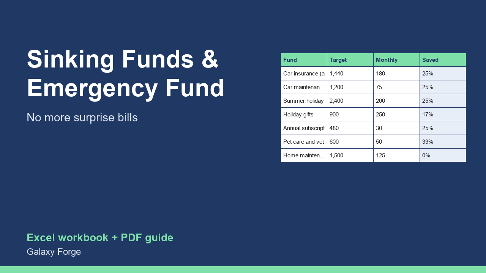

Turn the irregular bills that wreck a budget (insurance, car repairs, holidays, gifts) into a fixed monthly amount, and see when your emergency fund will be complete with what is left.
Most budgets fail on the bills that do not come every month: the car insurance due in March, the holiday in August, the annual software renewal, the vet. Each one feels like an emergency because nothing was set aside for it.
A sinking fund is money put aside a little each month for a known future bill. This workbook lists those bills, how much each will be, how much is already saved and how many months are left, and calculates the monthly amount each one needs.
It then takes what you can save each month, subtracts the sinking-fund amounts, and shows how many months it will take to complete your emergency fund (a number of months of essential expenses you choose) with what is left, or warns you when the sinking funds already take everything.
1) On Plan, enter your essential monthly expenses (housing, food, utilities, insurance, minimum debt payments), how many months of them you want in an emergency fund, how much is already saved, and how much you can save each month in total. 2) On Sinking Funds, list each irregular bill: what it is, the amount, what is already set aside and how many months until it is due. 3) Read the monthly amount each one needs. 4) The Summary shows the total monthly sinking-fund contributions, what is left for the emergency fund, and the month it will be complete.
Price: $9, one-time. Download: sinking_funds_emergency_fund_planner.xlsx (Plan, Sinking Funds, Summary) and this guide. Works in Excel 2016 or later, Excel for Mac and Excel on the web; opens in Google Sheets and LibreOffice.
New product, listed 2026-10-24: no sales or reviews yet. Example figures in the workbook are illustrative.
This workbook is a personal budgeting tool, not financial advice. It plans savings from the figures you enter; it does not account for interest, investment returns or inflation.